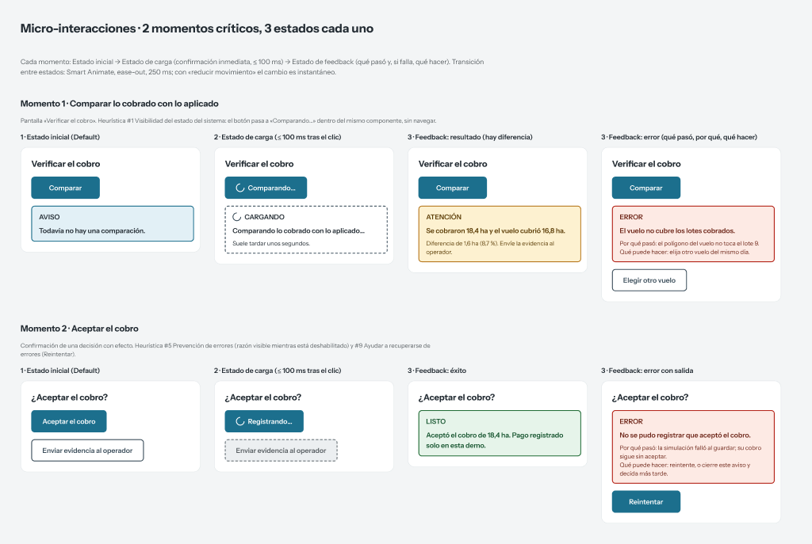
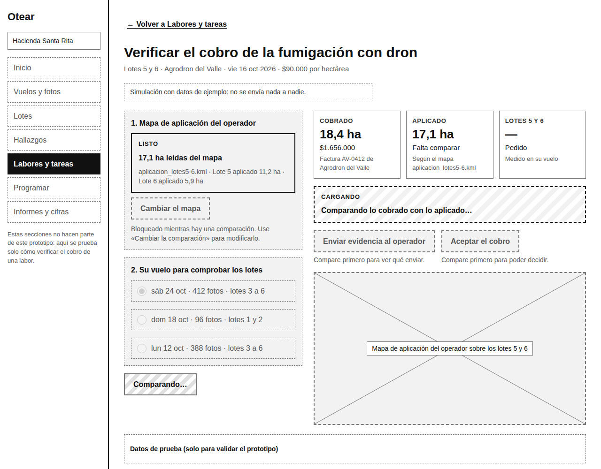
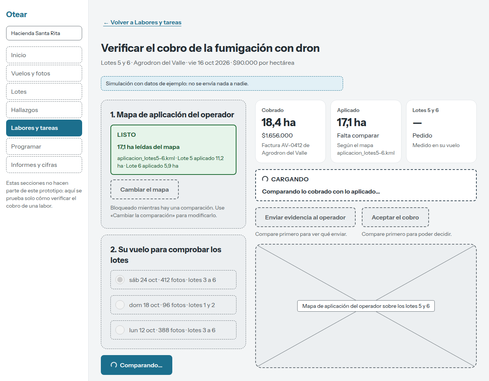
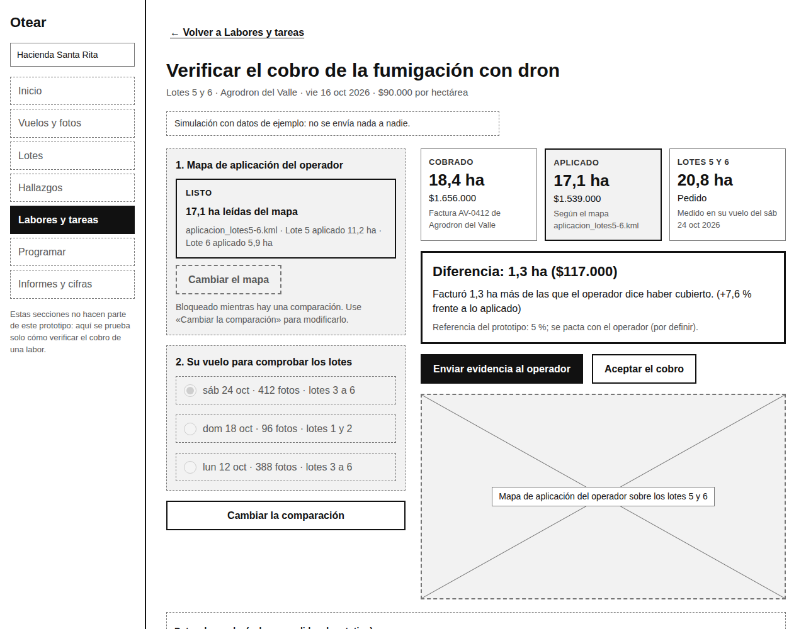
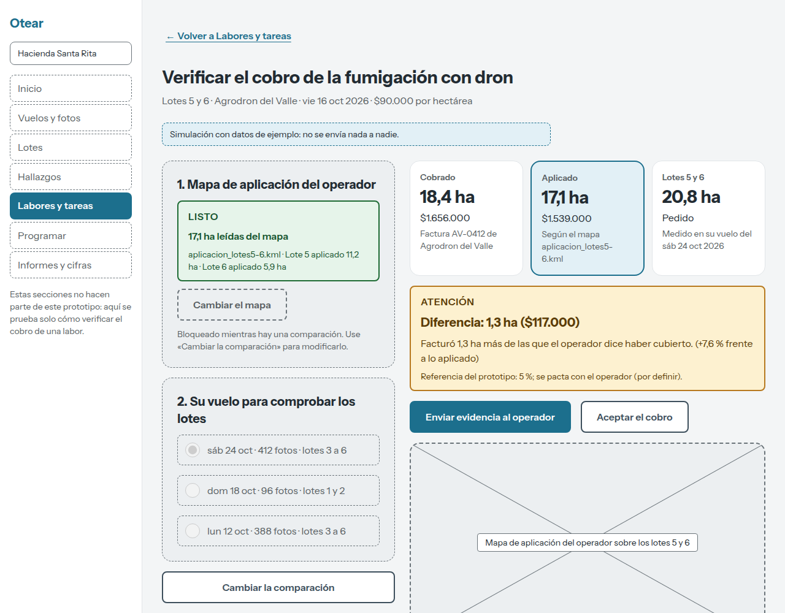
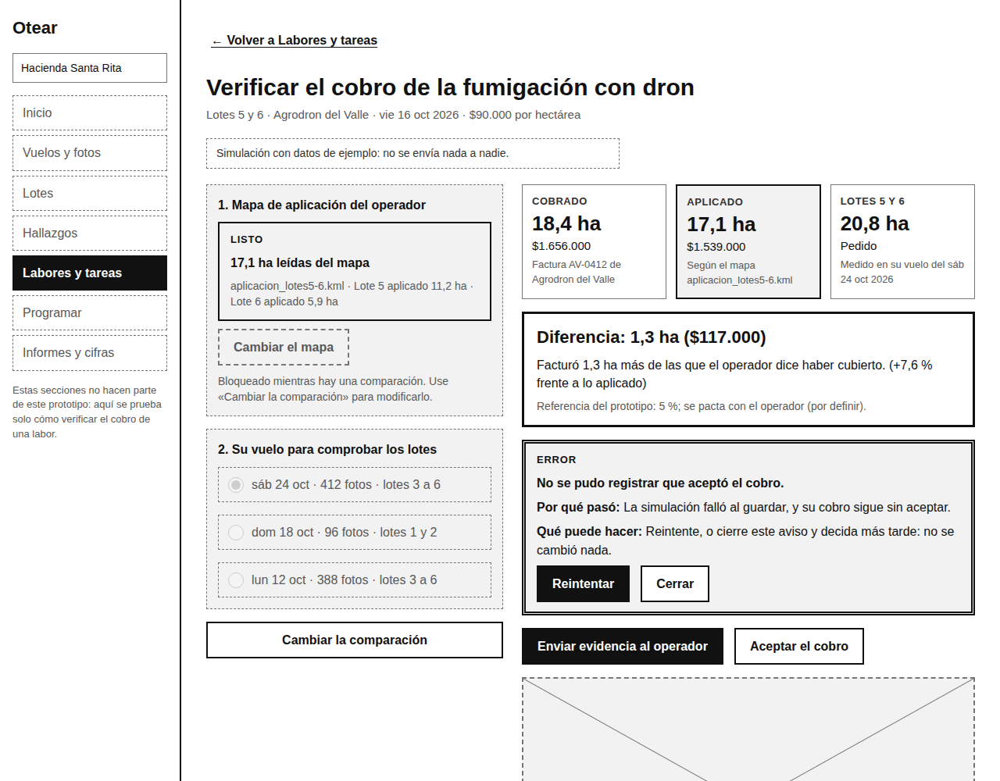
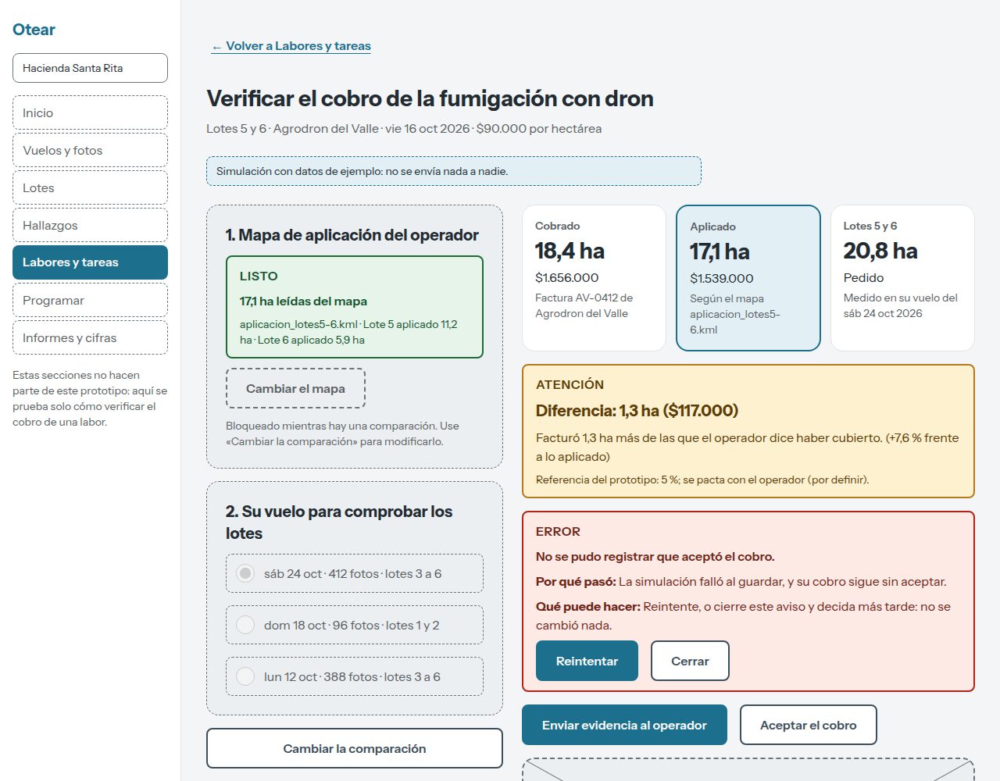
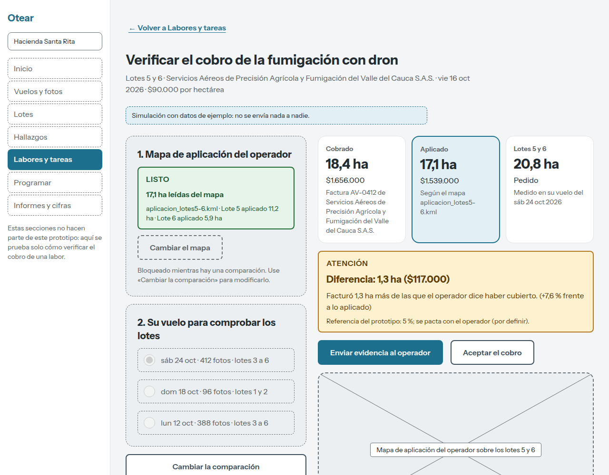
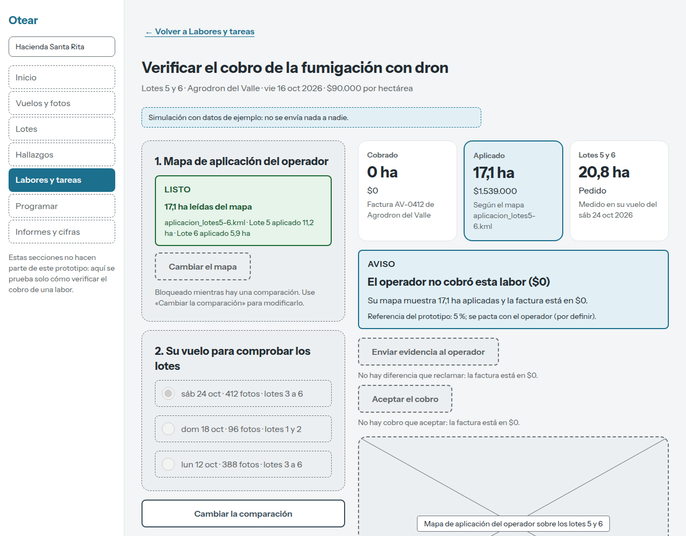

URL pública del prototipo: https://otear.pages.dev/prototipo/verificar-cobro/
Video del recorrido (máx. 3 min): {{VIDEO_URL}}
Repositorio (público; ver theme.json y AGENTS.md en la raíz): https://github.com/rojasluismanuel467-lab/otear
UI Kit en Figma (página «_UI Kit»): https://www.figma.com/design/Q6mPLc5fmbp56a2Zm4zPii/?node-id=56-2
Este trabajo eleva el prototipo funcional de S2 (el flujo «Verificar el cobro de una labor contratada» para Hernando, 56 años, administrador de la Hacienda Santa Rita) sin crear un proyecto nuevo ni cambiar el flujo: tres pantallas, la misma lógica, los mismos datos. Lo que cambió es la capa visual y de estados, que ahora sale de un sistema de diseño.
| Entregable | Dónde está y qué se puede comprobar |
|---|---|
| UI Kit en Figma | Página «_UI Kit»: 20 estilos de color, 5 estilos de texto (Heading, Body, Caption), escala de espaciado 4-8-12-16-24-32, 3 radios, estilo de efecto «Focus/Ring» y 26 componentes con el estado en el nombre (Button/Primary/Default, Alert/Error, Badge/Status/Success…): Button (Primary y Secondary × Default, Hover, Focus, Disabled, Loading), Field/Text (Default, Focus, Disabled, Error, Success), Alert (Info, Loading, Success, Warning, Error), Badge/Status (4) y ButtonWithReason (2). Sin Variants ni Variables de Figma, como pide la consigna. El kit se escribió en Figma con el MCP oficial desde Claude Code; la ruta obligatoria para la IA es la A (AGENTS.md). |
| Design system para la IA | AGENTS.md (sección «Sistema de diseño del prototipo»: reglas, tabla Figma ↔ código, micro-interacciones, mensajes de commit) y theme.json (54 variables CSS generadas, fuente única). npm run theme genera las variables CSS y npm test falla si el CSS tiene un color, tamaño de letra o duración escritos a mano. |
| Sistema aplicado al repositorio de S2 | El mismo repositorio. todo color, tamaño de letra, espacio, radio, grosor de borde y duración de prototype.module.css sale de var(--ds-*) (solo quedan literales las medidas de la rejilla de la pantalla: 232, 380 y 480 px); cada componente lleva su nombre del UI Kit en data-ds. La lógica de verificación y sus 16 pruebas no cambiaron. |
| Micro-interacciones | Dos momentos críticos con tres estados cada uno, diseñados en Figma (figura 1) y construidos en código: «Comparar» y «Aceptar el cobro». |
| URL pública | GitHub → Cloudflare Pages (despliegue automático al subir a main), sin pantallas sin salida. |
Un archivo de Figma bonito no basta: la IA genera CSS arbitrario si no tiene una especificación. Por eso los valores viven en un solo archivo legible por máquina (theme.json), las reglas de uso en AGENTS.md y los nombres coinciden entre Figma y el código; así la calidad del sistema se mide en qué tan bien lo aplica el agente, y eso se prueba con una prueba automática, no con la vista. Los criterios vienen de fuentes que se pueden citar: las 10 heurísticas de usabilidad de Nielsen (1994) para decidir qué cambiar; WCAG 2.2 (W3C, 2023) para el contraste (1.4.3 y 1.4.11), el no depender solo del color (1.4.1) y el tamaño del objetivo (2.5.8); y los tres límites de tiempo de respuesta de Nielsen (1993): 0,1 s se siente instantáneo, 1 s no interrumpe el pensamiento, 10 s agota la atención. De ahí salen las reglas de movimiento del sistema: el estado de carga debe aparecer en menos de 100 ms y los cambios de estado duran 250 ms con curva de salida suave, que es lo bastante rápido para sentirse como respuesta y lo bastante lento para verse. Con «reducir movimiento» activado todo es instantáneo.

Principio: Heurística #1 Visibilidad del estado del sistema. Qué se modificó: el botón «Comparando…» era un recuadro gris con rayas, sin indicador de movimiento; ahora es el mismo Button/Primary con un indicador que gira y el gerundio, y el aviso Alert/Loading lleva la palabra «Cargando» y el mismo indicador.


- .btn[aria-busy="true"] { background: repeating-linear-gradient(135deg, var(--soft-2) 0 8px, #fff 8px 16px); }
+ .btn[aria-busy="true"] { cursor: progress; } /* parts.tsx: {loading ? <Spinner /> : null} */
+ .spinner { animation: ds-spin var(--ds-motion-spinner) linear infinite; } /* quieto con prefers-reduced-motion */
Justificación: sin una señal de que el clic fue recibido, Hernando duda y vuelve a pulsar; con un indicador que se mueve y una palabra, confirma de inmediato que el sistema trabaja. Medido con el script capture-prototype.mjs: el estado de carga aparece 4-5 ms después del clic en S2 y 13-14 ms en la versión final; los dos cumplen el criterio de 100 ms, así que la mejora no es de velocidad sino de claridad (el límite de 0,1 s no se pierde).
Principio: Heurística #4 Consistencia y estándares. Qué se modificó: el veredicto de la comparación era una caja con borde negro de 3 px distinta de todos los demás avisos. Ahora usa la misma familia Alert (Success, Warning, Info) con su palabra («Atención», «Listo», «Aviso»), y el estado de las labores pasó de etiquetas grises a Badge/Status.


- <section className={styles.verdict}> + <section className={`${styles.verdict} ${verdictClass}`} data-ds="Alert/Warning">
- <h2 className={styles.verdictTitle}>{title}</h2> + <span className={styles.alertLabel}>{kindLabel[verdictKind]}</span> <h2 …>{title}</h2>
Justificación: cuando lo mismo se ve igual en toda la pantalla, la persona aprende una vez qué significa un aviso ámbar o uno verde y deja de releerlos. El color refuerza pero no sustituye: cada aviso lleva su palabra y una forma de borde (WCAG 1.4.1), de modo que sigue siendo legible en escala de grises o con daltonismo. Los textos pasaron de 13 px a un piso de 14 px (de 8-12 elementos por pantalla con texto menor a 14 px a ninguno).
Principio: Heurística #9 Ayudar a los usuarios a reconocer, diagnosticar y recuperarse de los errores. Qué se modificó: el error al registrar la aceptación tenía borde doble gris, igual de pesado que un éxito o un aviso. Ahora es Alert/Error: fondo y borde rojos, palabra «Error», el texto de «Por qué pasó» y «Qué puede hacer» y el botón primario «Reintentar» junto a «Cerrar».


Justificación: el error es el momento en que más se pierde la confianza. El mensaje sin culpar a la persona, con la razón y el siguiente paso, y con la acción de recuperación como botón primario, hace que un fallo de la simulación no se vuelva un callejón sin salida; y el aviso entra con una transición de 250 ms para que se note sin asustar.
Con el panel «Datos de prueba» del prototipo se cargaron cuatro casos extremos además del normal: operador con nombre de 78 caracteres, nota del operador de 716 caracteres, cobro de $0 y cobro de casi $50.000.000. En cada uno se recorrió el flujo hasta el resultado y se midió en el navegador (1280×1000 px) el desborde horizontal, los elementos que pasan el borde derecho y los textos menores a 14 px.
| Caso | Desborde horizontal | Elementos fuera del borde | Textos < 14 px (antes → después) |
|---|---|---|---|
| Normal | no / no | 0 / 0 | 12 / 8 → 0 / 0 |
| Operador de 78 caracteres | no / no | 0 / 0 | 12 / 8 → 0 / 0 |
| Nota de 716 caracteres | no / no | 0 / 0 | 12 / 9 → 0 / 0 |
| Cobro de $0 | no / no | 0 / 0 | 12 / 8 → 0 / 0 |
| Cobro de $49.999.994 | no / no | 0 / 0 | 12 / 8 → 0 / 0 |


Análisis: el sistema se sostiene: ningún texto se corta ni se sale, porque las tarjetas y avisos parten la línea (overflow-wrap: anywhere) y las columnas usan minmax(0, 1fr). Dos límites que se observaron: (a) con el nombre largo las tres tarjetas dejan de tener la misma altura (la de «Cobrado» es más alta); es aceptable porque no hay pérdida de información, pero si el nombre fuera mucho más largo convendría limitarlo a dos líneas con el nombre completo en el detalle; (b) las cifras de siete dígitos en la tabla ocupan toda la celda y dependen de que la columna «Cobro» no se estreche, algo que solo se probó a 1280 px de ancho y no en móvil.
Sí, para probar el flujo en computador. Tiene URL pública, los tres estados (inicial, carga y feedback) de cada acción crítica, errores con salida y contenido extremo medido. Se puede medir en S4 con las tareas de S1: tasa de éxito de T2 (verificar el cobro y decidir), tiempo en la tarea, errores y reintentos, si la persona entiende el veredicto sin ayuda, y satisfacción (SUS).
Lo que no está resuelto y debe decirse: (1) el enlace «← Volver» existe solo en el código y el estado Success de Field/Text solo en Figma, porque el flujo no lo usa; (2) pensado para escritorio, sin prueba en celular, con lector de pantalla ni en otros navegadores; (3) el Smart Animate de 250 ms está especificado como estados en Figma y como transición CSS en el código, sin prototipo con reacciones; (4) los datos son de ejemplo y nada se envía, y la interfaz lo dice; (5) la tolerancia del 5 % sigue «por definir»; (6) los ítems del menú lateral están deshabilitados y no son parte del flujo.
Referencias. Nielsen, J. (1993). Usability engineering. Morgan Kaufmann. · Nielsen, J. (1994). 10 usability heuristics for user interface design. Nielsen Norman Group. · W3C. (2023). Web Content Accessibility Guidelines (WCAG) 2.2. https://www.w3.org/TR/WCAG22/ · Rojas Correa, L. M. (2026). Otear: prototipo de baja fidelidad (Semana 1) y prototipo de mediana fidelidad (Semana 2) [Trabajos del curso]. Universidad Icesi.